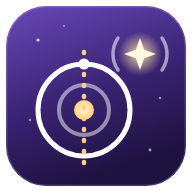

Die Welt in ganz anderen Maßstäben – quer durch die Erde, zurück im Licht der Sterne und mit Höchstgeschwindigkeit durchs All.
Was liegt genau unter dir – auf der anderen Seite der Erde? Neige dein Smartphone nach unten und schau quer durch Kruste, Mantel und Kern bis zum Ausgang.
Am anderen Ende
–
Was dich auf dem Weg nach unten erwartet. Stationen, die dein Tunnel erreicht, sind hervorgehoben.
Wo kämst du von einem anderen Ort aus heraus? Die Suche läuft ganz auf dem Gerät.
90° heißt senkrecht nach unten – dann kommst du am Gegenpunkt der Erde heraus. Je flacher du zielst, desto kürzer der Tunnel und desto näher der Ausgang.
Licht ist unterwegs – oft viele Jahre. Irgendwo am Himmel steht ein Stern, dessen Licht genau in dem Moment losgeflogen ist, an dem du geboren wurdest. Heute kommt es bei dir an.
Bleibt nur auf diesem Gerät. Geht auch für Hochzeitstag, Geburt der Kinder oder einen anderen besonderen Tag.
Dein Lichtecho-Stern
–
Wann das Licht deines Moments bei den nächsten Sternen ankommt.
So lange war das Licht unterwegs, das in diesem Augenblick von Mond, Sonne und Planeten bei dir ankommt – live berechnet.
Wann das Licht losflog, das du heute Nacht von diesen Himmelsobjekten siehst.
Das Sonnensystem vor deiner Haustür. Die Sonne steht bei dir, alle Planeten in echtem Maßstab drumherum. Wie weit ist es bis Neptun – und wie groß wäre die Erde?
Wie weit soll Neptun von dir entfernt sein?
Tippe auf einen Planeten für Steckbrief, deinen Geburtstag dort und ob er heute Nacht zu sehen ist.
Beim Start wird die Sonne an deinen Standort gesetzt. Unterwegs zeigt StaunWahr, welcher Planet als Nächstes kommt, und meldet jede Bahn, die du kreuzt. Der Standort bleibt auf dem Gerät.
Du sitzt still? Von wegen. Gerade jetzt rast du mit der Erde, der Sonne und der ganzen Milchstraße durchs All – schneller als jedes Raumschiff.
So weit kommst du in 24 Stunden – ganz ohne einen Schritt zu tun.
Rekorde von Menschen und Maschinen im Vergleich.